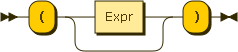

Prev
Next
4.2.2. Parenthesized expression

Figure 4.15. ParenthesizedExpr
Use parentheses to override the precedence of expressions.
If the parentheses are empty, the empty sequence is produced.
Example 4.35. Empty sequence
()
Result:
Prev
4.2. Basic operations
Up
Home
Next
4.2.3. Arithmetics